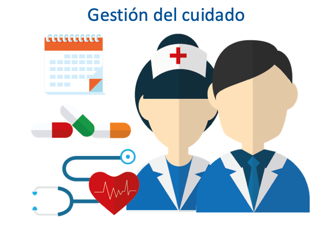

ENFERMERÍA PSM
ENFERMERÍA PSM
Visión
> "Aspiramos a ser reconocidos como un "centro de excelencia en salud universitaria" a nivel nacional, un referente por nuestro "compromiso con la salud integral" de la comunidad y nuestra capacidad para "marcarla diferencia en la vida de cada persona".
> Nuestro objetivo es "generar conocimiento de impacto en el campo de la medicina", promoviendo la investigación científica, la innovación y la difusión de los resultados para mejorar la salud de la población universitaria y contribuir al avance de la medicina.
